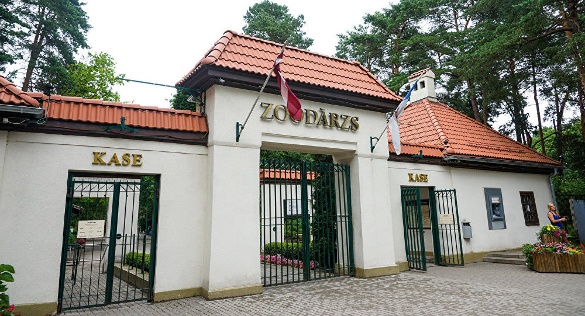

Tūrisma objekts
RĪGAS ZOOLOĢISKAIS DĀRZS

Rīgas Nacionālais zooloģiskais dārzs jeb Rīgas zoodārzs ir zooloģiskais dārzs Rīgā, Mežaparkā, Latvijas Republikā. Aizņem aptuveni 20 hektāru platību un tā kolekcijā ir 430 sugu 3000 dzīvnieki, no kurām vairāk nekā 40 sugas iekļautas pasaules Sarkanajā grāmatā
|